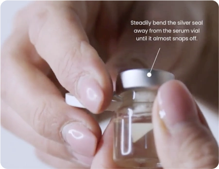

Contents

Quick Start Guide
- Micro-Infusion Device
- 1 sterile needle head
- Micro-Infusion serum
Step-By-Step Guide
After your treatment:
- Apply gentle, hydrating skincare if you need it.
- Avoid using makeup or active ingredients (like retinoids or acids) for at least 24 hours.
- Avoid heat, sweating, and direct sun.
Learn About Your Device
Qure’s Micro-Infusion device uses 24K gold plated needles to deliver concentrated serum directly below the surface of your skin.
The needles are thinner than a strand of hair, so the treatment feels gentle — but the results are powerful.

It triggers your skin’s natural repair response, boosting collagen production and cell renewal.

It creates tiny, invisible channels in the surface of your skin, allowing powerful active ingredients to absorb deeper and work faster.

Serum Ingredients & Information
Each Qure Micro-Infusion treatment is powered by a single-use ampoule of concentrated serum, designed to target specific skin concerns with clinically backed ingredients.
These serums are lightweight, fast-absorbing, and free from fragrance, parabens, and harsh actives.
Smoothes and evens skin to promote a brighter looking complexion.
Helps to plump skin, reducing the look of fine lines and wrinkles.
Where to Use
The Qure Micro-Infusion device is designed for use on the face and neck only.
You can safely treat the forehead, cheeks, nose, chin, jawline, and the under-eye area (up to the orbital bone).
Use light, even pressure and pass over each area 2–3 times. If a section feels too sensitive, it’s okay to skip it.
Do not use Micro-Infusion on the eyelids, lips, or on areas with active breakouts or broken skin.
Do not use Micro-Infusion on the eyelids, lips, or on areas with active breakouts or broken skin.
Post-Treatment Care & Tips
After your Micro-Infusion treatment, your skin is more absorbent and sensitive. Following the right aftercare helps maximize results and minimize irritation.
For the first 24 hours:
- Stick to gentle skincare products only, such as hydrating cleansers and simple moisturizers.
- Avoid makeup, sun exposure, heat (like saunas or workouts), and swimming.
- Skip active ingredients like retinol, acids, or vitamin C.
- Minimize touching your face – especially with unclean hands.
You may experience slight redness and irritation after the treatment. This is normal and should subside within a few hours!
The morning after:
- Always apply SPF 50+ to protect your skin.
For the next 2-3 days:
- Gradually reintroduce your usual skincare.
- If you use exfoliants or actives (like retinol), wait 48–72 hours before applying them again.
Safety Precautions
Your Qure Micro-Infusion treatment is designed to be gentle and effective — but it’s important to use it correctly.
We recommend completing a patch test on an area of your skin that isn't too exposed prior to treatment, to have a better understanding of how your skin will react and the downtime you should expect.
Do not use Micro-Infusion if:
- You have active acne, open wounds, sunburn, eczema, or rosacea
- You’ve used retinoids, acids (AHAs/BHAs), or exfoliants in the last 48 hours
- You’ve recently had laser, filler, or chemical peel treatments (wait at least 2 weeks)
- You’re pregnant or breastfeeding (without consulting your doctor first)
- You have a history of keloid scarring or severe skin sensitivity
- You have metal allergies or any medical concern
Only use the serums supplied with your Micro-Infusion Device. Only our serum ampoules are developed specifically for the Qure’s Micro-Infusion Device.
Note:
This treatment is not intended to diagnose, treat, cure, or prevent any disease. If you have any skin conditions, are pregnant or breastfeeding, please consult with your doctor prior to treatment.
If you have metal allergies or if you have any medical concern, please consult your medical professional before using this treatment device. Any harmful consequence resulting from misuse or application to other body areas, not following instruction or any other improper applications is neither the responsibility of Qure Skincare Pty Ltd. or its affiliates.
Frequently Asked Questions
Micro-Infusion treatment is powerful, and you’ll likely notice the first results instantly, with a strong radiance boost, softer fine lines and overall a healthy, fresh complexion in the next day or two.
The more treatments you perform, the more outstanding skin benefits you’ll receive.
Depending on how many treatments you complete, the results should last three to four months.
We recommend using your Micro-Infusion treatment every 2 weeks for the best results.
We recommend using the treatment at night before bed, due to the increase in skin’s sensitivity following the treatment.
Avoid makeup, sun exposure, heat (like saunas or workouts), and swimming for 24 hours after use,
Definitely! Once you’ve completed the treatment, take the leftover serum from the device and pat it onto your face and neck.
One ampoule of serum is intended for one whole treatment.
We recommend stamping with a 50% overlap. This means each time you stamp, you overlap the previous stamp halfway.
Our serums come sealed with aluminum to ensure the serum stays sterile for treatment.
Firmly hold the ampoule bottle. Find the arrow on the cap lid and flip to open from the end where the arrow is located.
Once the seal has been broken, hold the cap and steadily bend the silver seal away from the serum ampoule until it almost snaps off.
Peel back the silver seal from around the top of the serum ampoule and dispose of it.
Remove the rubber stopper and pour the serum into your Micro-Infusion device.
If you’re mixing serums for your treatment, put back the rubber stopper on the vial to save the remaining serum for your next session!
If you’re mixing serums for your treatment, put back the rubber stopper on the vial to save the remaining serum for your next session!
When stamping it’s best to ensure the serum is at the end of the device where the needles are.
Sometimes this requires you to slightly tilt your head back or device towards the ceiling to help the serum make its way through the needles.
Another tip is to pop the lid back on the device and put it upside down again, firmly tap the end of the device a few times to help push the serum down the needles
Yes, you can!
Make sure to apply a very gentle pressure, up to your orbital bone, when stamping around the eye area. We also recommend only doing one pass in this area.
Never use Micro-Infusion on your eyelids or too close your your lash line.
Yes. Performing Micro-Infusion on the neck can help improve the appearance of fine lines, and rejuvenate skin.
It can target issues such as neck creases, horizontal lines, and age-related skin concerns to help enhance the overall texture, tone, and youthfulness of the skin.